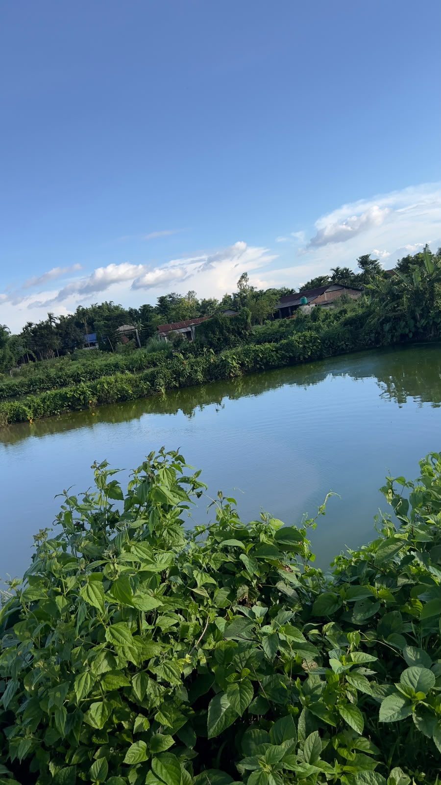
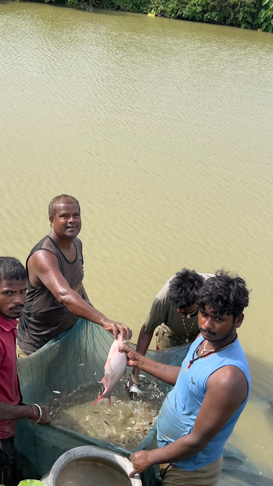

Vegetables
Tomato, cauliflower, cabbage, potato, carrot, spinach, cucumber and broccoli.
FRESHLY HARVESTEDFresh, healthy and locally grown produce — straight from our farm to your table.
Sanjog Krishi Farm is a modern agricultural farm dedicated to producing fresh, healthy, and locally grown farm products.
We focus on sustainable farming practices while maintaining the quality and freshness of every product we provide.
Our mission is to connect local farmers and customers through fresh agricultural products while promoting environmentally responsible farming.
Discover Our Farm →Carefully grown seasonal produce for homes, businesses and bulk orders.
Tomato, cauliflower, cabbage, potato, carrot, spinach, cucumber and broccoli.
FRESHLY HARVESTEDStrawberry, orange, kiwi, guava, avocado and delicious seasonal fruits.
SEASONAL SELECTIONorganic herbs, dairy products and seasonal farm produce.
FARM-MADE & FRESHWe believe responsible farming can nourish communities while caring for the land.
Plan a Farm Visit →At Sanjog Krishi Farm, we raise healthy and fresh fish using responsible farming practices.
Fresh and healthy fish raised at our farm.
We maintain suitable water conditions for fish farming.
We focus on responsible and sustainable farming.



Take a closer look at life, farming, and feeding at our fish farm.

Take a quick tour of our fish farm and see how we raise healthy fish.
Watch our fish during feeding time and see how we care for them.
Simple, reliable ways to enjoy and connect with fresh local agriculture.
Quality produce harvested with freshness in mind.
Convenient farm-to-customer delivery for fresh orders.
Reliable agricultural supply for larger requirements.
Visit our farm and experience local agriculture.
Learn more about responsible and sustainable farming.
Curated seasonal produce packages for your needs.
Environmentally responsible practices.
Products prepared with freshness first.
A closer connection between farm and customer.
Care and consistency in every harvest.
For orders, farm visits, bulk requirements or general enquiries, reach out to us.